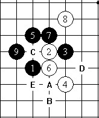
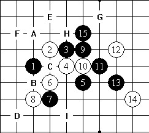
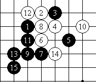
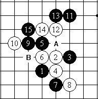
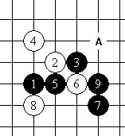

图5
峡月的变化较多。白4是强防，黑5走在A位，同残月变化。
白6如果走B位，黑7继续下黑7。在老的定式中，黑9走在C位也能追胜。
白4如果走D位，黑5走E或A位，都可以。如果黑5走E位，白6走白6，黑7走A，白8走4位，黑9走黑9。

图6
白4是最强防。白6如果走A位，黑7就走C位，或者下在B位也不错。但是如果黑7下在白6位，白8走F位，黑棋就陷入困境了。
黑15以后是云月定式。白16走F位，黑17、19就走B、E位。当然黑17走C、G、H、I、D都是不错的选择。

图7
白8的变化。黑5如果走11位，白6就在白8位。图7的黑15是正着。
白16下在黑13左边2路是强防，不过黑棋仍然可以取胜。

图8
白4的强防（事实上，经过现代的深入研究，更多人认为这个白4才是最强防――编者按）。
黑5的一打点是下在A位。图8的白6变化近似于恒星的变化。
白6如果走B位，黑7走8位，白8走7位，黑9走A位。

图9
白4的变化。黑5的一打点应当下在6位。白8如果走A位，黑9走8位，就和花月变化一样了。
图9中的黑9是好手，黑棋很优的局面。 转自中华连珠
［此帖子已被 茗弈小刀 在 2011-1-18 15:19:14 编辑过］